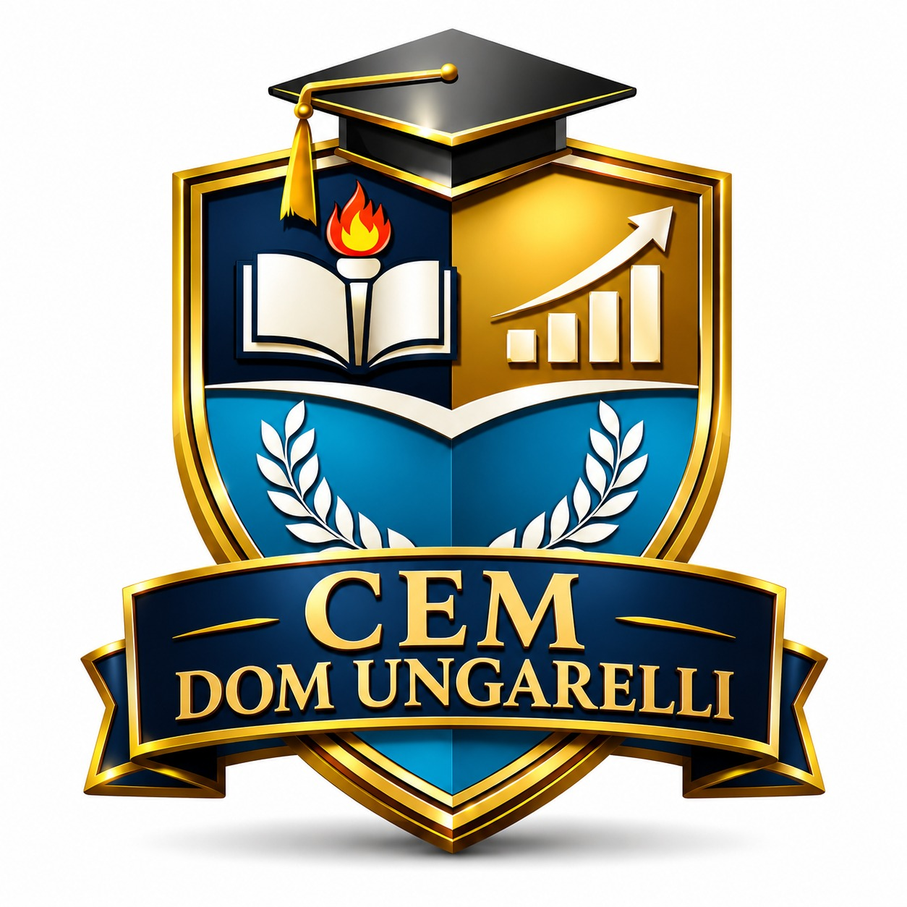
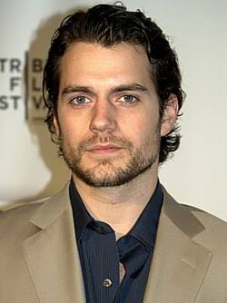

01 / CONHECIMENTO
⌕
O que podemos conhecer?
Conhecimento, verdade, dúvida, senso comum e pensamento científico.

DOM UNGARELLIEducação que transformaPORTFÓLIO DOCENTE · 2026
Filosofia como convite ao diálogo, à reflexão crítica e à construção de uma sociedade mais consciente.
Uma vida sem reflexão não merece ser vivida.— Inspirado em Sócrates

Olá! Seja bem-vindo(a) ao portfólio do Professor Zezinho.
Este espaço reúne propostas, reflexões e experiências pedagógicas desenvolvidas no componente de Filosofia do Centro Educa Mais Dom Ungarelli. A intenção é valorizar o pensamento autônomo, a escuta respeitosa e a curiosidade dos estudantes diante das questões humanas e sociais.
Mais do que memorizar ideias, filosofar é aprender a investigar, argumentar, dialogar e construir pontos de vista com responsabilidade.
A filosofia começa quando deixamos de aceitar respostas prontas e passamos a investigar as perguntas que movem a vida.
Conhecimento, verdade, dúvida, senso comum e pensamento científico.
Valores, liberdade, responsabilidade, justiça e convivência.
Cidadania, poder, democracia, direitos e participação social.
Identidade, sentido da vida, cultura, escolhas e projeto de futuro.
Estratégias que colocam os estudantes no centro da investigação e da aprendizagem.
Construção de argumentos, escuta ativa e respeito às diferenças.
Contato com ideias filosóficas, textos contemporâneos e situações do cotidiano.
Análise de situações reais para refletir sobre escolhas, direitos e responsabilidades.
Podcasts, cartazes, vídeos, mapas conceituais e registros reflexivos.
Uma área para registrar atividades, produções e aprendizagens construídas com as turmas.
Registros de debates e rodas de conversa sobre questões atuais e temas do cotidiano.
ESPAÇO PARA REGISTROSReflexões coletivas sobre respeito, justiça, responsabilidade e vida em sociedade.
ESPAÇO PARA REGISTROSProduções dos estudantes em textos, imagens, podcasts e apresentações.
ESPAÇO PARA REGISTROSDica: personalize estes cartões com fotos, datas, nomes das turmas e links para os trabalhos realizados.
“O importante não é parar de questionar. A curiosidade tem sua própria razão de existir.”
Uma educação filosófica cultiva a curiosidade e abre espaço para novas perguntas.
Este portfólio é um espaço vivo de partilha, aprendizagem e reflexão.